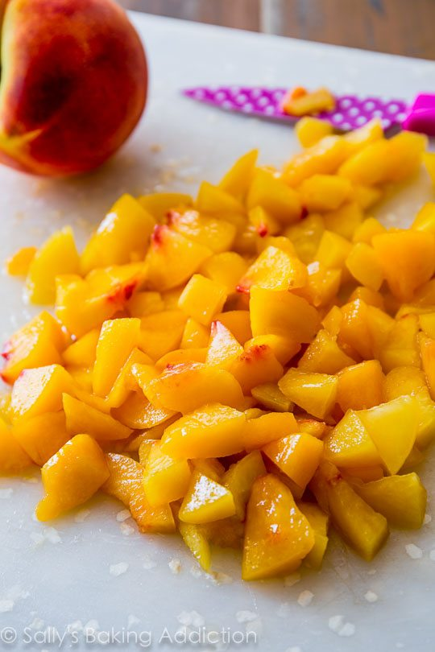
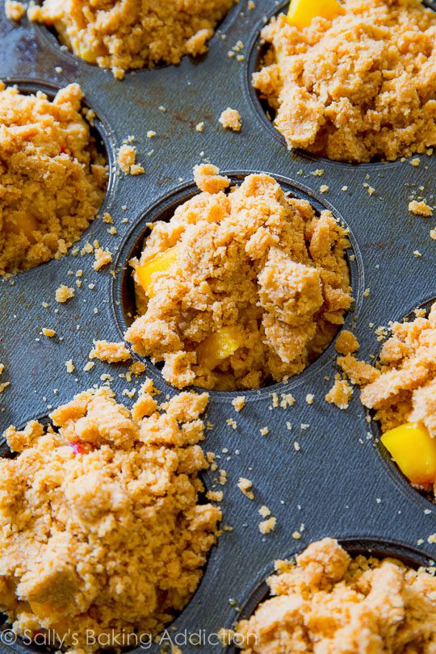
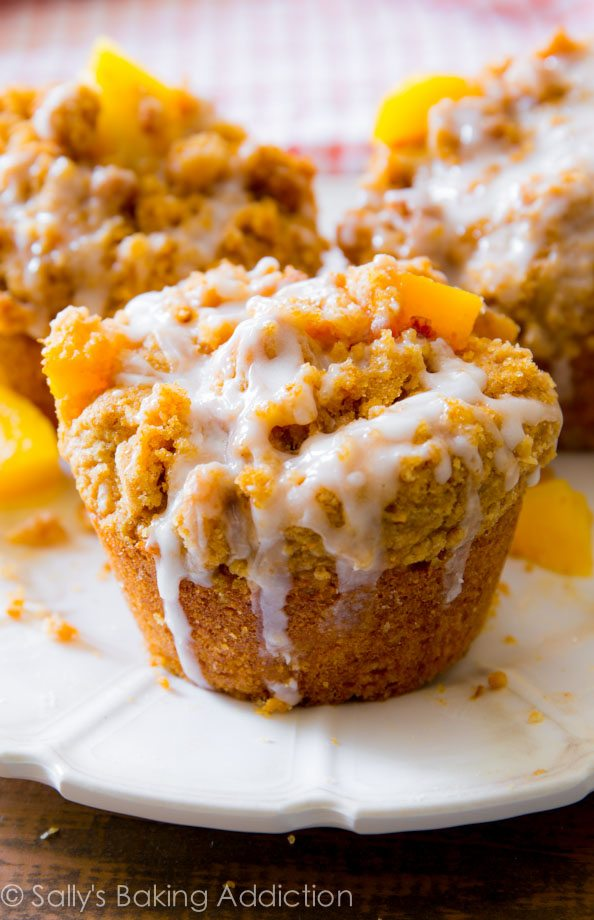

Peach Streusel Muffins
Prep Time: 25min
Cook Time: 23min
Total Time: 1hr
Makes: 12 muffins

Ingredients
Crumb Topping
1/3 cup (67g) packed light or dark brown sugar
1 Tablespoon (15g) granulated sugar
1 teaspoon ground cinnamon
1/4 cup (60g) unsalted butter, melted
2/3 cup (84g) all-purpose flour
Muffins
1/2 cup (115g) unsalted butter, softened to room temperature
1/2 cup (100g) packed light or dark brown sugar
1/4 cup (50g) granulated sugar
2 large eggs, room temperature
1/2 cup (120g) yogurt*
2 teaspoons pure vanilla extract
1 and 3/4 cups (220g) all-purpose flour (spoon & leveled)
1 teaspoon baking soda
1 teaspoon baking powder
1/2 teaspoon ground cinnamon
1/8 teaspoon ground allspice
1/2 teaspoon salt
3 Tablespoons (45ml) milk (any kind)
1 and 1/2 cups peeled, chopped peaches (3 peaches)
Glaze
1 cup (120g) confectioners’ sugar
3 Tablespoons (45ml) heavy cream (or milk for a less creamy texture)
1/2 teaspoon pure vanilla extract

Instructions
- First, make the crumb topping: In a medium bowl, combine both sugars, the cinnamon, and melted butter. Using a rubber spatula, stir in the flour. The crumb topping will be thick and crumbly. Set aside.
- Preheat oven to 425°F (218°C). Spray a 12-count muffin pan with nonstick spray. Set aside.
- Make the muffins: In a medium bowl using a handheld or stand mixer fitted with a paddle attachment, beat the butter on high speed until smooth and creamy, about 1 minute. Add the brown sugar and granulated sugar and beat on high until creamed, about 2 full minutes. Scrape down the sides and bottom of the bowl as needed. Add the eggs, yogurt, and vanilla extract. Beat on medium speed for 1 minute, then turn up to high speed until the mixture is combined and uniform in texture. Scrape down the sides and bottom of the bowl as needed.
- In a large bowl, toss together the flour, baking soda, baking powder, cinnamon, all-spice, and salt. Pour the wet ingredients into the dry ingredients and slowly mix with a whisk. Add the milk, gently whisking until combined and little lumps remain. Fold in the peaches with a wooden spoon or rubber spatula.
- Spoon the muffin batter evenly between all 12 muffin tins. There may be enough to make a 13th muffin in a 2nd batch, depending if there were a few extra peach chunks thrown in. Fill the muffin tins until they are full all the way up to the top. Press a handful of the crumb topping into the top of each; crumble it with your hands to make some big chunks.
- Bake for 5 minutes at 425°F (218°C), then keeping the muffins in the oven, lower the oven temperature to 350°F (177°C) and bake for 15-19 more minutes or until a toothpick inserted in the center comes out clean.
- Make the glaze: whisk all of the ingredients together and drizzle over warm muffins.

Notes
- Make Ahead & Freezing Instructions: Muffins stay soft, fresh, and moist in the refrigerator for up to 5 days. Muffins freeze well for up to 2 months. Thaw overnight in the refrigerator and heat up (if desired) before enjoying.
- Yogurt: Use your favorite yogurt; I prefer low fat plain Greek yogurt but regular (not Greek) would be just fine. Try with apple flavored, vanilla, honey, nonfat, or full fat. Sour cream works as well.
- Peaches: You can use chopped frozen peaches – do not thaw.

Enjoy!